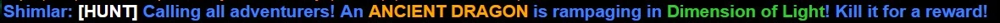
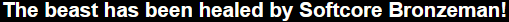
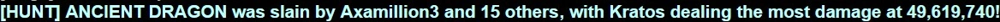
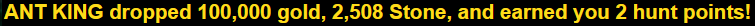
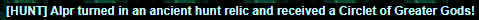
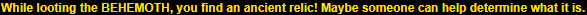
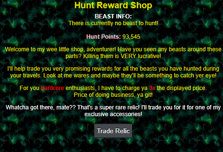

Overview
Random events are things that can happen while every one is clicking. Listed below are all events that can happen, which all can participate in (with some restrictions).
Jackpot
Every kill, a percentage of that monster's gold is deposited into the game's Jackpot. An alternative way of donating to the jackpot is dying to the reaper, which takes your gold and donates 2x the amount to the jackpot.
This event is for regular players only. Ironman and Hardcore Ironman are ineligible to win, and do not contribute to it at all.
Win requirements:
- Must be Level 200 or higher
- Must be a regular account.
Every monster kill, you have a chance at winning! You can see how much is in the jackpot by using the command /jackpot. Upon hitting the jackpot, you'll be presented a message along with how much you won, viewable in both General and Clan Chat!
"[Your Name] hit the jackpot and won [Gold Amount] gold!"
Your name will display along with this message and how much the jackpot was worth to all players.
The chance to win the jackpot on any monster kill is 1/77,777.
Hunts
Hunts happen when a beast goes rampaging in a zone. Kill it and you are rewarded greatly!
Requirements to trigger:
- Must be Level 1,000 or higher
Every monster kill, you have a chance at triggering a hunt.
Hunt Start

A global message will display in Chat and Race/Clan Chat notifying all players of the event. You go to the randomly selected zone to fight a randomly selected beast.
The zone is selected from a group of ~25 zones, with the highest being Fallen Temple, requiring level 1,300.
Hunt Heal

The skill ceiling is rather low to survive a hunt, as damage is capped at a minimum of 10,000 and maximum of 125,000.
While fighting, you have a 1/1,500 chance of healing the beast, giving them more health. Jade/Cobalt help increase how many times you can hit, but are capped at +50%.
Hunt Kill

Upon death, the final blow is displayed in chat. Everyone who participates (and does not leave the area) will receive 100,000 gold and 500-4,000 of a random resource.
Ironman players receive 10% of each reward. 20,000hp is also added cumulatively per hunt that has existed. Example: If there have been 200 hunts triggered during the round, the next one will have 4M (200 * 20k) additional hp added.
Hunt Reward

Hunts follow a point system, as follows:
- +1 point for participating (dealing damage at least once)
- +2 point for the killing blow
- +1 point for every 4,000,000 damage you dealt (per hunt, not cumulative)
Note: Hunt damage is weighted on kill and scaled down to match the hunt's HP.
Note 2: You must stay inside the same zone as the hunt to receive all rewards when it is killed.
Hunt Reward Shop
Located at 2,0 Royal University, this is where you spend your hunt points on even greater prizes!
The shop also displays the currently active hunt, if it exists, along with the total amount of points you've earned!
Point Redeem

You can redeem your hunt points for a variety of options.
- Witcher Title: 1 / 3 / 7 / 14 / 25 for each tier.
- Participation Points: 30 / 30 / 30 for +2, +3, +4p
- Killing Blow: 20 / 20 / 20 for +4, +6, +8p
- Damage: 25 / 25 / 25 for +2, +3, +4p
- 10 accessories that can be viewed on the Accessories page.
You have a 1/300 (1/900 HCIM) chance of receiving an additional message for participating in a hunt, or a 1/150 (1/450 HCIM) chance for the killing blow.
Hunt Relic


If you get that message, you can claim your prize at the hunt reward shop for a random (weighted) accessory. The list of hunt-exclusive accessories is on the Accessories page. They are all near or equal to best in slot accessories, with many upgrading to become best in slot! In return, they are not tradeable.
| Chance | Accessory |
|---|---|
| 20% | Orb of Greater Learning |
| 16% | Greater Diamond Ring |
| 15% | Ring of Greater Mastery |
| 12% | Amulet of Greater Power |
| 11% | Bracelet of Greater Luck |
| 10% | Chalice of Greater Luck |
| 7% | Pendant of Greater Accuracy |
| 5% | Greater Prophecy Sphere |
| 3% | Sash of the Seven |
| 1% | Circlet of Greater Gods |
Raids
Raids used to exist as a pay to win event, but it was removed, alongside hunts. Raids shall return one day though!